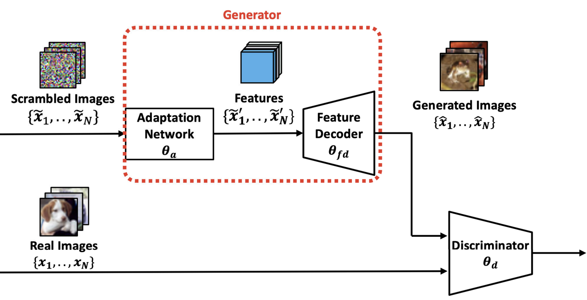
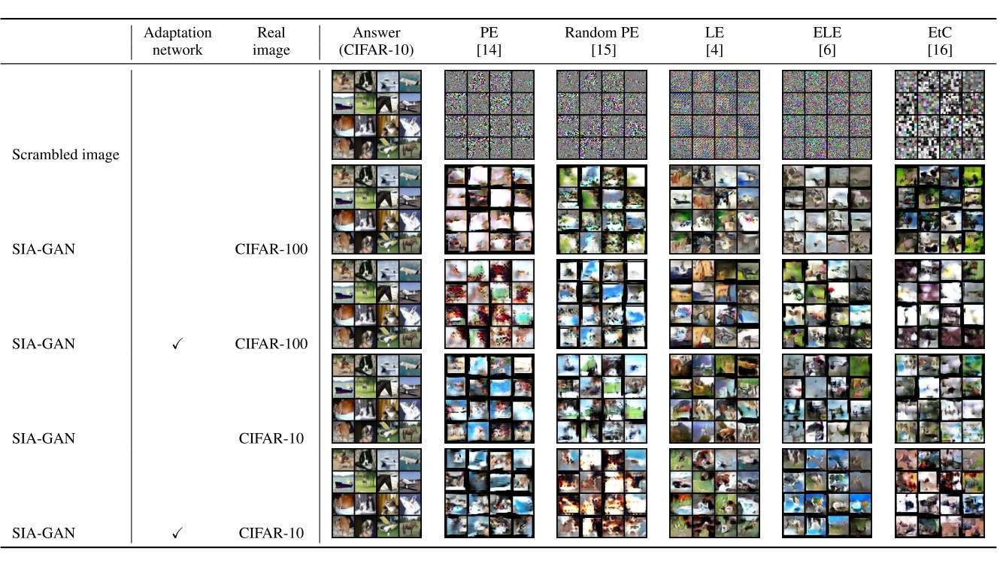

SIA-GAN: Scrambling Inversion Attack Using Generative Adversarial Network
IEEE Access, vol. 9, pp. 129385–129393, 2021 (open access) · doi:10.1109/ACCESS.2021.3112684
- Paper (DOI)
- PDF (IEEE Xplore)
- Code (GitHub)
- Code (integrated): scramblekit
- Library: pip install scramblekit

Abstract
This paper presents a scrambling inversion attack using a generative adversarial network (SIA-GAN). This method aims to evaluate the privacy protection level achieved by image scrambling method. For privacy-preserving machine learning, scrambled images are often used to protect visual information, assuming that searching the scramble parameters is highly difficult for an attacker due to the application of complex image scrambling operations. However, the security of such methods has not been thoroughly investigated. SIA-GAN learns the mapping between pairs of scrambled images and original images, then attempts to invert image scrambling. Therefore, the attacker is assumed to have real images whose domain is the same as that of scrambled images. Experimental results demonstrate that scrambled images cannot be recovered if block shuffling is applied as a scrambling operation. The experimental code of SIA-GAN is available at https://github.com/MADONOKOUKI/SIA-GAN.
Threat model and attack
- What the attacker has. Scrambled training or test images intercepted on their way to the cloud, the block size (it is visible in the adaptation network) and the class labels. With the labels, the attacker collects real images of the same classes. These come either from the same dataset as the victim's (CIFAR-10) or from a different one (CIFAR-100).
- SIA-GAN. The generator consists of block-wise sub-networks (one per block, re-assembled with a pixel-shuffle layer) and a feature decoder with spectral normalisation. The discriminator also uses spectral normalisation. Generator and discriminator are trained jointly with the hinge adversarial loss, then the generator maps a stolen scrambled image back to image space.
Main result
Five scramblers were attacked, with and without the adaptation network in the generator and with same-domain or different-domain real images. Without block shuffling (PE, random PE, LE) the attack recovers the structure of the original images. With block shuffling (ELE, EtC) the generated images look natural but do not reveal the original content. Block shuffling is therefore what protects scrambled images, at some cost in classification accuracy.

| Input | Adaptation | Real images | PE | Random PE | LE | ELE | EtC |
|---|---|---|---|---|---|---|---|
| Scrambled image | 0.3255 | 0.3231 | 0.3035 | 0.2947 | 0.2074 | ||
| SIA-GAN output | different (CIFAR-100) | 0.1845 | 0.1954 | 0.1069 | 0.1589 | 0.2628 | |
| SIA-GAN output | ✓ | different (CIFAR-100) | 0.1632 | 0.1960 | 0.1565 | 0.1483 | 0.2116 |
| SIA-GAN output | same (CIFAR-10) | 0.1964 | 0.1509 | 0.1451 | 0.1897 | 0.2067 | |
| SIA-GAN output | ✓ | same (CIFAR-10) | 0.1719 | 0.1559 | 0.0914 | 0.1512 | 0.2090 |
LPIPS between the original CIFAR-10 image and the scrambled image (first row) or the image generated by SIA-GAN (other rows); values from Table 3 of the paper. PE: pixel-based encryption; LE: learnable encryption; ELE: extended learnable encryption; EtC: encryption-then-compression.
Use it
SIA-GAN is available in scramblekit as a ready-made attack for evaluating any scrambler, and the paper repository reproduces Table 3 with attack.py.
pip install "scramblekit[all]" scramblekit attack --dataset cifar10 --real-dataset cifar100 --scheme le --key paper --out runs/siagan_le
from scramblekit.attack import SIAGAN
from scramblekit.scramble import LE
attack = SIAGAN(num_classes=10) # adaptation network + feature decoder vs. discriminator
attack.fit(train_loader, scrambler=LE("paper"), epochs=100) # train_loader: (image, label) batches, e.g. CIFAR-10
print(attack.evaluate(test_loader, LE("paper"))) # PSNR / SSIM / LPIPS of the recovered images
git clone --depth 1 https://github.com/MADONOKOUKI/SIA-GAN cd SIA-GAN && pip install -e . python attack.py --scheme le --real-dataset cifar100 # one cell of Table 3 (LE, real images from CIFAR-100)
--scheme selects the attacked scrambler (pe, randompe, le, ele, etc) and --dataset fake runs a quick smoke test without downloading data. The Python lines show the same attack through the scramblekit API (train_loader and test_loader are your data loaders); the last three lines use the paper repository, whose scripts/reproduce_table3.sh lists all 20 runs of Table 3.
Citation
@article{madono2021siagan,
title = {{SIA-GAN}: Scrambling Inversion Attack Using Generative Adversarial Network},
author = {Madono, Koki and Tanaka, Masayuki and Onishi, Masaki and Ogawa, Tetsuji},
journal = {IEEE Access},
volume = {9},
pages = {129385--129393},
year = {2021},
doi = {10.1109/ACCESS.2021.3112684}
}
Related work in this series
All four image-scrambling papers are implemented in one pip-installable library, scramblekit (pip install scramblekit).
The paper is open access under the Creative Commons Attribution 4.0 licence (IEEE Access); the figures above are reproduced from it.
← Back to the publication list